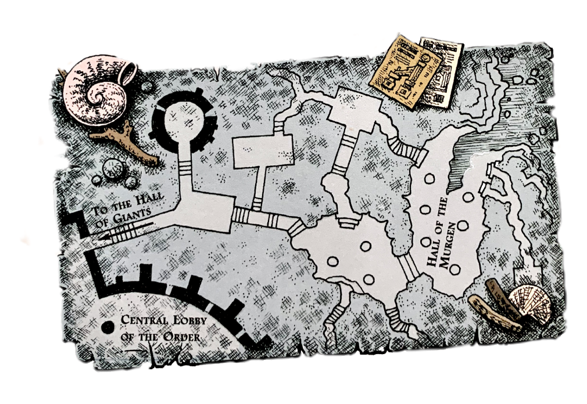
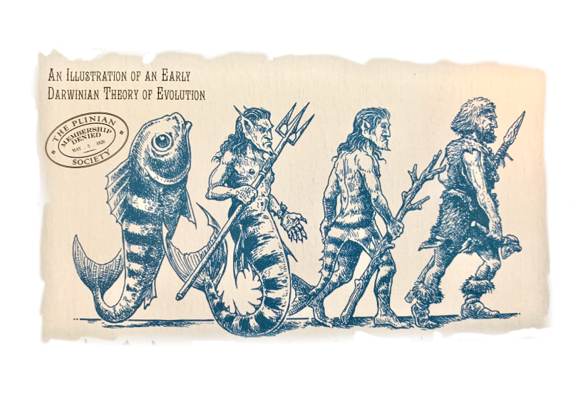

In the Land of Merfolk
We have collected much lore, and now we ask you to join us. Relations with the Merfolk have been especially strained of late. Pollution of the world's waters and depletion of fish populations have led to growing tensions between Merfolk and Humans. It is our intention to share with you all knowledge of the Merfolk - their magic and enchantments, customs and curiosities and unparalleled understanding of the deep - so that favorable relations with our sea cousins may be restored and forever respected.
Treasures from the Deep
Naturally-formed sea caves below the castle, adjoining the Hall of the Murgen , contain some of the rare artifacts that have been loaned to the Order. They are returned, after careful study, to their place of origin. Most artifacts, of course, are returned to the depths of the sea by their Merfolk custodians, to be cherished, worshipped or re-hidden accordingly. Some however, such as the Zennor church pew from Cornwall, will be returned to the Land Folk.
One of the first artifacts found is a carved shell found almost two centuries ago, cast up by the waves near the ancient port of Antaradus (now called Tartus) on the Syrian coast. Inscribed on it in tide runes are the words of the oldest known hymn to Atargatis , made long ago by worshipful Merfolk and placed upon an underwater shrine:
Star-bright Mother!
We leave this offering of shell-home.
May the murk places grow bright.
May your children swim in joy.
May the foam-door rise and fall in peace.
By black water, by blue water,
May all sea folk be blessed.
Merfolk Origins
A was with deep mysteries, like the seas in which they live, the Murgen, or 'sea born', are the oldest of the secret races. It seems certain that Merfolk existed before Humans, but kept, at first, to the lower oceanic zones. Eventually making their way to land. They developed legs and began to walk. As to where the Merfolk came from, that remains shrouded in myth.
Not satisfied with the mythic nature of the mermaids' origins, Humans like to invent their own theories. Though often ridiculed by the Merfolk, such stories do provide intriguing insights into human scholarship. Before the publication of his more famous 'On the Origin of Species.' Charles Darwin once speculated (Incorrectly) on the matter of Merfolk evolution.
- mer•folk
-
noun
a fabled, legendary people of the sea with the head and upper body of a human and the tail ofa fisha sea creature?.
Despite their various names - Merrymaids, Se-Morgans, Marbendill - many accounts describe Merfolk simply as half-fish and half-human. To date, scant attention has been paid to the wonderful variety of their physical appearance. Merfolk take their 'color' from the seas that surround them, sharing their fish neighbors hue and body markings, scale shape and fin placement. This is perhaps the greatest evidence that Merfolk evolved in their own waters, and are not descended from Land Folk.
As the philosophers sa, "Nature rejoices in oddities." Thus, there are many kinds of Merfolk, some closely resemble their human cousins; others are scaled from head to fin, and bearing gills and other aquatic appendages. The appearance of individual merfolk species entirely depends upon the types of local fish alongside whom they have evolved. Certain Merfolk, such as the Indo-Pacific mermaid may share physical traits with a variety of species. Many of which include:
- Tentacles (as well as dorsal spines) are used for defense. In some species, these are capable of delivering a poisonous sting via hidden barbs.
- When the dorsal spines are erect, Merfolk are alert and defensive; when they lay flat along the spine, Merfolk are passive and approachable.
- Membranes are used for display purposes - in ceremonial, territorial and mating rituals. Buoyancy is achieved by a swim bladder, located behind the stomach.
- Every marking - whether dark, bright or bioluminiscent - has meaning. Spots, lines and patches may all indicate fish alliances, clan and tribe membership, emotional state, or age.